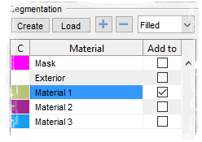

Did you know...
- Press 'E' to toggle between last two active materials of the model
- Move the cursor above any material and press 'Ctrl+F' to select this material in the segmentation table
|  |
If you need to quickly change the current material of the model please use one of these key shortcuts:
|